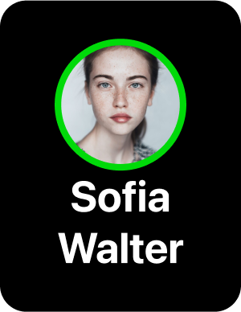

About concept
I am offering a solution for mobile online cinema applications. This will assist people in discovering movies to watch and spending quality time with their friends, family, and acquaintances. The application will be particularly useful in that it enables you to engage in voice or text chat with your friends while you watch the movie you previously selected.
Problem
Many people are unable to locate an app that allows them to watch films together online. Oftentimes, people resort to alternative solutions to address this issue.
How people solve this problem:
Streaming services require the initiator to create a stream from their PC or laptop. However, this solution has some drawbacks, such as the inability to use voice chat and limited options for text chat. Additionally, the initiator must possess a PC or laptop for streaming, which can be a challenge and may not be accessible to everyone.
There are various messaging services that allow for screen sharing, which enables your friends to engage in voice and text chat. However, this method has similar limitations to the streaming solution, with the exception of the ability to use voice chat.
Even when utilizing messaging services on a smartphone, it is only possible to translate the browser screen and not the entire device screen, which is necessary when using an online cinema app. This limitation may lead to the use of unofficial or pirated services.
Solution
This conceptual solution enables individuals to watch films together online. When using a mobile cinema app with this feature, users can watch the film with their friends and engage in voice or text chat. Additionally, other individuals can invite users to watch a film together. I will describe this function in greater detail below.
User flow: “Inviting Friends”
This flow demonstrates how the user will navigate between screens to create a request for their friends.

How it works
Choosing a movie
From the main screen, you can access any film’s page, and from there, you can invite your friends to watch the movie together, either immediately or at a later time.


Choosing friends for invite
When you select certain friends, you have the opportunity to invite new friends by using the “Add New Friends” button. The system will open a new search page, where you can find new people and invite them. After adding new friends, the system will return you to the chosen friends page.


If you have selected many friends, your selected friends will be displayed in a horizontal scroll.

Choosing a date
You can select a date and time to plan your viewing, or you can send a request to watch at the current time and begin watching immediately


Request notification
At the end of the process, you will receive a notification about the scheduled movie, which you can cancel if desired.


User flow: “Managing Your Planned List”

Page of “Planned List”

Firstly, you can view a list of the movies you have planned to watch.
You have the option to swipe left to view your friends' list or swipe right to see the movies you have already watched.
If you confirmed a friend’s request, but then that friend canceled the request, the movie will be automatically removed from your planned list.
About planned list

In this example, you can see that one of your friends has cancelled your request, but another friend has confirmed it.

If a lot of people confirmed your request, but another group of people cancelled, your request will appear like this.

This row indicates that there is a request that is waiting for your confirmation.

This row indicates that you have confirmed the request with yor friends.
Pages of movie’s states
If you access the page of a movie that is on your planned list, you will find information about it, such as who initiated the request, when and who will be watching it with you. Additionally, you have the option to cancel your request and leave the group for watching the movie.


This variant of movie’s page show us that you open movie which waiting your confirmation. Josef send request to you and you can confirm this or ignore. If you will confirm this request, you can cancel this if you want.


This page is the default option. It will be displayed if you choose to cancel or ignore the request. However, you can create your own request for this movie.

Video players for all

Without any condition

When you use the voice chat and there are multiple speakers, the system should only display the two people who started speaking first

Read the text chat

While typing

About status

The green border show us that the person are speaking
The red border show us that the person are muted himself
This is the default status
When you use the voice chat and there are multiple speakers, the system should only display the four people who started speaking first

Read the text chat

While typing
Video players for host and guest while tap on movie area
As a viewer, you will be able to see the title, timeline, and participants. If there are many participants, you can scroll up and down to view them all. However, the host has the ability to control the timeline and enable or disable subtitles, which are the primary differences from the guest player.

For host

For guest

For host

For guest
During the movie viewing, everyone can choose to hide or show the text chat on their device. This feature is not dependent on the host’s actions.

For host

For guest

For host

For guest

For host

For guest

End of watching

At the end of the movie, if you wish to watch another one, the host can select the next movie and start playing it